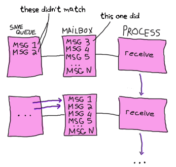

Selective Receive
Joe的Programming Erlang中讲到了Selective Receive的时候，提到了一个save queue的概念。
2
3
4
5
6
7
8
9
10
11
> Pattern1 [when Guard1] ->
> Expressions1;
> Pattern2 [when Guard2] ->
> Expressions2;
> ...
> after
> Time ->
> ExpressionsTimeout
> end
>
- When we enter a receive statement, we start a timer (but only if an after section is present in the expression).
- Take the first message in the mailbox and try to match it against Pattern1, Pattern2, and so on. If the match succeeds, the message is removed from the mailbox, and the expressions following the pattern are evaluated.
- If none of the patterns in the receive statement matches the first message in the mailbox, then the first message is removed from the mailbox and put into a “save queue.” The second message in the mailbox is then tried. This procedure is repeated until a matching message is found or until all the messages in the mailbox have been examined.
- If none of the messages in the mailbox matches, then the process is suspended and will be rescheduled for execution the next time a new message is put in the mailbox. Note that when a new message arrives, the messages in the save queue are not rematched; only the new message is matched.
- As soon as a message has been matched, then all messages that have been put into the save queue are reentered into the mailbox in the order in which they arrived at the process. If a timer was set, it is cleared.
- If the timer elapses when we are waiting for a message, then evaluate the expressions ExpressionsTimeout and put any saved messages back into the mailbox in the order in which they arrived at the process.
在进入一个receive语句的时候，没有被匹配的消息被临时移到save queue中，等当前receive语句匹配到消息以后再移回消息队列。那么为什么不能直接丢弃这些没有被匹配的消息呢？
要回答这个问题，就不能把思维局限在一个receive语句。实际上，在进程中，receive语句可以是嵌套，可以是串联的，当前不能匹配的消息，是可能在嵌套的receive或者后续的receive匹配到的。
丢弃消息会出现问题。当然为了防止未知消息的堆积，一般会有一个匹配一切的语句，remove掉不需要的消息。

嵌套的receive：
1 | loop() -> |
以及：
1 | loop() -> |
串联的receive：
1 | receive |
验证
启动一个分布式节点，方便通过远程shell连过来。
1 | (foo@deng)1> erlang:register(shell,self()). |
向shell进程发消息，并进入匹配。
1 | (foo@deng)2> self() ! c, self() ! d, self() ! a. |
这时候shell进入了receive的等待过程，按照之前的说法，这时候shell的消息队列应该为空，我们通过远程shell连上来查看shell的消息队列。
1 | (foo@deng)3> process_info(whereis(shell),messages). |
我们看到shell的进程队列并不为空。
求证
在官网上找到一段对receive的描述：
Each process has its own input queue for messages it receives. New messages received are put at the end of the queue. When a process executes a receive, the first message in the queue is matched against the first pattern in the receive. If this matches, the message is removed from the queue and the actions corresponding to the pattern are executed.
However, if the first pattern does not match, the second pattern is tested. If this matches, the message is removed from the queue and the actions corresponding to the second pattern are executed. If the second pattern does not match, the third is tried and so on until there are no more patterns to test. If there are no more patterns to test, the first message is kept in the queue and the second message is tried instead. If this matches any pattern, the appropriate actions are executed and the second message is removed from the queue (keeping the first message and any other messages in the queue). If the second message does not match, the third message is tried, and so on, until the end of the queue is reached. If the end of the queue is reached, the process blocks (stops execution) and waits until a new message is received and this procedure is repeated.
The Erlang implementation is “clever” and minimizes the number of times each message is tested against the patterns in each receive.
并没有提到save queue，消息没有被匹配的时候是留在消息队列中的。
深入源码
beam_receive.erl文件中有这么一段：
In code such as:
2
3
4
5
6
7
8
> .
> .
> .
> receive
> {Ref,Reply} -> Reply
> end.
>
we know that none of the messages that exist in the message queue
before the call to make_ref/0 can be matched out in the receive
statement. Therefore we can avoid going through the entire message
queue if we introduce two new instructions (here written as
BIFs in pseudo-Erlang):
2
3
4
5
6
7
8
9
10
> Ref = make_ref(),
> .
> .
> .
> recv_set(SomeUniqInteger),
> receive
> {Ref,Reply} -> Reply
> end.
>
The recv_mark/1 instruction will save the current position and
SomeUniqInteger in the process context. The recv_set
instruction will verify that SomeUniqInteger is still stored
in the process context. If it is, it will set the current pointer
for the message queue (the next message to be read out) to the
position that was saved by recv_mark/1.The remove_message instruction must be modified to invalidate
the information stored by the previous recv_mark/1, in case there
is another receive executed between the calls to recv_mark/1 and
recv_set/1.We use a reference to a label (i.e. a position in the loaded code)
as the SomeUniqInteger.
beam_emu.c文件中画出了receive语句的执行流程如下：
1 | Skeleton for receive statement: |
erl_process.h定义了process结构，包含两个队列，一个公共队列，对于支持SMP的进程，可能存在多个进程同时向一个进程写消息的情况，这种情况下需要给消息队列加锁，这意味着进程自己处理消息的时候也需要加锁。
为了提高效率，引入了一个ErlMessageInQueue，其他进程先把消息写入这个进程，进程自己通过ErlMessageQueue来读取消息。这里我们重点关注ErlMessageQueue.
1 | struct process { |
ErlMessageQueue的结构定义如下：
1 | typedef struct{ |
获取当前消息，读取的是save指针指向的消息，最开始进入匹配的时候，save是指向链表头的，消息匹配不成功以后save向后移。
1 | /* Get "current" message */ |
下面我们通过汇编文件来分析receive的过程，先编辑一个源文件：
1 | -module(test). |
编译：
1 | 1> c(test). |
在目录下找到test.dis文件，找到函数t的实现：
1 | 08235938: i_func_info_IaaI 0 test t 0 |
实现在beam_emu.c中:
- i_loop_rec_fr: Pick up the next message and place it in x(0), If no message, jump to a wait or wait_timeout instruction.
- loop_rec_end_f: Advance the save pointer to the next message (the current message didn’t match), then jump to the loop_rec instruction.
结论
实际上并不存在save queue这一实体，也不存在消息在save queue和message queue之间相互拷贝，save queue可能只是老爷子为了说阐述消息匹配机制引入的一个抽象。
消息没有匹配到的时候只是将save指针向后移一个单位。
- 对于每一次receive，每个消息最多匹配一次。没有匹配的消息在有新消息进来的时候并不会重新匹配，而是直接匹配新消息。
- 一旦有消息匹配完成或者超时，save指针重置，意味着下次进入receive仍然要消息队列的最开始进行匹配。无法匹配的消息这时候会再次进行匹配。可以通过make_ref来避免。
- 要防止进程中存在无法匹配的消息。因为消息堆积起来对性能产生负面影响，每次receive都会对这些消息进行匹配。
PS：本文所有实现基于R1603版本。